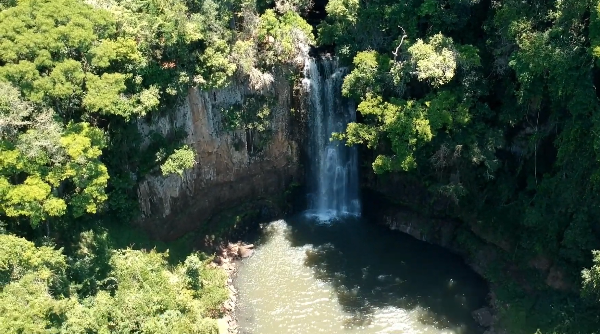
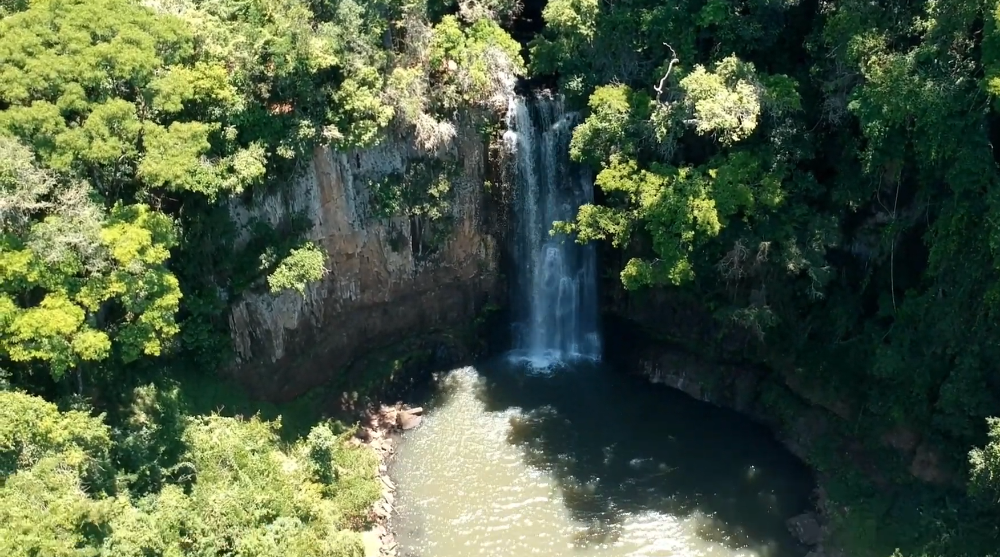

Monumento Nossa Senhora das Graças
A imagem de Nossa Senhora das Graças é uma das maiores construída no mundo, com 22 metros de altura. A construção do monumento começou em 1957, em comemoração ao aniversário de 50 anos da cidade. Na capela, em dias festivos e especiais do calendário católico, são celebradas missas e novenas. O local possui estacionamento, capela, loja de souvenir e um mirante com vista da cidade e do pôr do sol.

Parque aquático
O Parque Aquático de Irati foi inaugurado em 1989, em uma área aproximada de 79.000m². Tem lago com peixes e patos, Pavilhão de Exposições usado para atividades culturais da cidade, quadras desportivas, pista de cooper/ciclismo, trenzinho, academia ao ar livre e playground para crianças.


Casa da Cultura
A Casa da Cultura é mantida pela prefeitura de Irati. Era a antiga residência da família Gomes, construída em meados de 1919 e doada ao município em 2004. A Casa da Cultura promove exposições itinerantes e fixas. Na parte inferior funciona o Museu Municipal de Irati com grande acervo de objetos, fotos, indumentária e documentos que retratam a história da cidade.


Cachoeira do Pinho de Baixo
Localizada na comunidade do Pinho de Baixo, a 12 km do centro da cidade. É uma cachoeira artificial, com aproximadamente 16 metros de altura e área para banho. Foi construída pela Copel para gerar energia à Irati.
 
